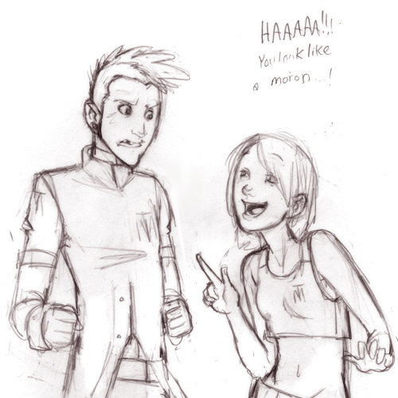
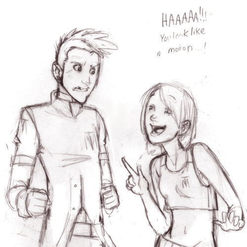

Casey St. Claire
- Story: Goshin
- Age: 18
- Gender: Cis female
- Note: This character belongs to my friend Bullybird.
As a child Casey grew up in Azalea Town in Johto. Her life was somewhat unnatural. Casey grew up without a mother in the family and her father was always away from home on business; Most of the time she was with her brother.
Because her brother worked for a Pokémon researcher, Casey learned a lot about Pokémon from him. Her brother raised particularly large Pokémon, and she quickly grew fond of the large and intimidating breeds. She would rather choose a gigantic and grumpy Nidoking over a cute and friendly Pikachu.
For some reason, her brother started to stay away from home for days on end; it was then that Casey decided to go off on her own journey. She got her first Pokémon from her father. It was a young Totodile. Along her journey Casey saw and fought many Pokémon, catching the ones she favored. Now her party is large and consists mostly of heavy and intimidating Pokémon. Because of her researcher background and knowledge of Pokémon, Casey has chosen to follow the breeder’s life. She excels in breeding ‘monster’ egg type Pokémon, but is not limited to that.
Pokemon Team: Harvey (garchomp), Verg (charizard), Fu (arcanine), Andre (feraligart), Lance (dragonite) and Atlas (nidoking).


 
